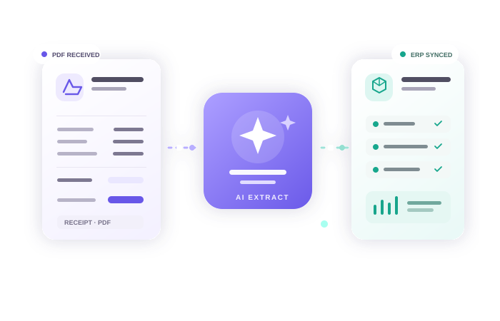

AUTOFLOW INTELLIGENCE 11월 16일 월요일
반복 업무는 가볍게,
중요한 일은 더 크게.
문서 수집부터 ERP 입력까지, 오늘의 업무 흐름을
AutoFlow가 매끄럽게 연결하고 있어요.
오늘 128건의 업무가 자동으로 처리됐어요

스마트 워크플로우문서에서 ERP까지 한 번에 실행 중
오늘 처리 문서
—
+12.8% 지난주 같은 요일 대비
AI OCR 성공률
—
정확도 기준 95% 이상
RPA 입력 완료율
—
ERP · Excel 자동 입력
평균 시간 절감
—
수기 입력 대비
처리 현황
최근 10일 문서 자동 처리량
자동화 파이프라인
세 개의 엔진이 함께 처리합니다
인증 · 공통 API
계정과 조직 데이터문서 AI 파이프라인
OCR · LLM 구조화RPA · ERP 연결
봇 2대 작동 중최근 처리 문서
AI가 처리한 최신 문서와 검토 상태
| 문서 번호 | 거래처 | 품목 | 합계 금액 | 처리 상태 | 일자 |
|---|